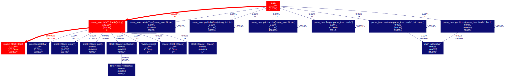
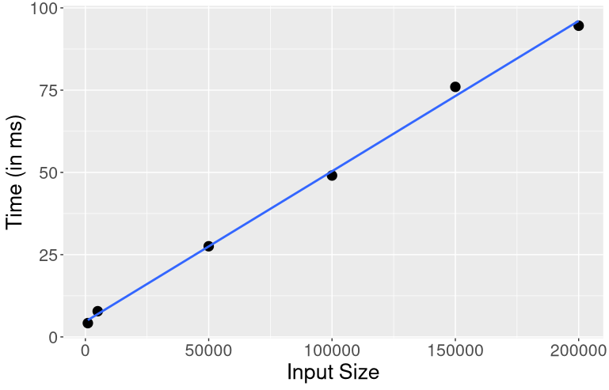

Benchmark Analysis
Table of Contents
1. Flat Profile
The following table denotes the number of times each function was called and how much time each function took.
| time | calls | total time/call | name |
|---|---|---|---|
| 100.00 | 1 | 10.00 | parsetree::evaluate(parsetree::Node*, int const*) |
| 0.00 | 1049998 | 0.00 | charindex(char) |
| 0.00 | 1000133 | 0.00 | precedence(char) |
| 0.00 | 850133 | 0.00 | Stack::top() |
| 0.00 | 400109 | 0.00 | Stack::empty() |
| 0.00 | 149999 | 0.00 | list::Node::Node(char) |
| 0.00 | 149999 | 0.00 | Stack::pop() |
| 0.00 | 149999 | 0.00 | Stack::push(char) |
| 0.00 | 2 | 0.00 | reverse(string) |
| 0.00 | 1 | 0.00 | parsetree::deleteTree(parsetree::Node*) |
| 0.00 | 1 | 0.00 | parsetree::prefixToTree(string, int, int) |
| 0.00 | 1 | 0.00 | parsetree::printInorder(parsetree::Node*) |
| 0.00 | 1 | 0.00 | parsetree::infixToPrefix(string) |
| 0.00 | 1 | 0.00 | parsetree::height(parsetree::Node*) |
| 0.00 | 1 | 0.00 | parsetree::getAtoms(parsetree::Node*, bool*) |
| 0.00 | 1 | 0.00 | Stack::Stack() |
| 0.00 | 1 | 0.00 | Stack::~Stack() |
2. Call graph
In this call graph we try to give a figurative description of what function in the program consumes what percentage of time as well as how many times that particular function has been called .
Inside each box, we first have the name of the function. Below it, we have its Self Time i.e. what fraction of running time has been spent in that particular function. Similarly, we have the total number of times this function was called.
The arrows between two boxes show the parent-child relationship between the two functions. The time percentage value mentioned on these arrows represents the fraction of running time of the parent consumed by that particular child. Simliarly, the number of calls on the arrows represent the number of times the child function was called by the parent function.
The curved arrows attached to a given box shows the number of recursive calls made by that particular function. (Open in image new tab for better view) 
3. Input vs Time
The maximum input size for the program is an input with 3,00,000 propositional atoms.

| Input size | Time taken to execute (in miliseconds) |
|---|---|
| 1000 | 4.185 |
| 5000 | 7.805 |
| 50000 | 27.55 |
| 100000 | 49.05 |
| 150000 | 75.99 |
| 200000 | 94.58 |